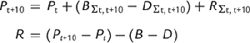

| | Footnotes | |
| |
| (Z). |
Series Ac54, less than 1,000; other series, less than 500.
|
| |
| | Sources | |
| |
1940–1970: U.S. Bureau of the Census, Current Population Reports, Population Estimates and Projections, series P-25, number 72, p. 5; number 304, p. 12; and number 460, pp. 10, 14.
1970–1980: Michael J. White, Peter Mueser, and Joseph P. Tierney, Net Migration of the Population of the United States by Age, Race and Sex, 1970–1980 (computer file) (Inter-university Consortium for Political and Social Research (distributor), 1990).
1980–1990: U.S. Bureau of the Census, Population Distribution Branch, “1981 to 1989 Intercensal Estimates of the Resident Population of States, and Year-to-Year Components of Change,” Sept. 1995, available at the U.S. Bureau of the Census Internet site.
| |
| | Documentation | |
| |
The figures in this table include international immigration as well as domestic migration, whereas the figures in Table Ac206–413, using a different method, provide estimates of net domestic migration. The components of change technique employed in this table uses information on the population in each state at the beginning and end of each decade and information on the total number of births and deaths to estimate net migration into or out of the state. It uses the formula

where Pt + 10 and Pt are the enumerated populations at time t and time t + 10 B and D are births and deaths over the decade, and R is a residual with several components: net domestic migration, net international immigration, movement of the federal population (such as those in the armed forces), and “the error of closure” (what must be added to balance the equation because of differences in enumeration rates between two adjacent censuses).
Until 1965, net international immigration and federal population movements were quite small, and the error of closure was also small. The estimated residual was thus a good approximation to net domestic migration. With the large increase in immigration after 1965 and the substantial decline in the underenumeration rate between 1980 and 1990, this series exhibits a substantial discontinuity. Though the U.S. Census Bureau is now able to estimate separately the error of closure, net federal movements, net international immigration, and net domestic migration, it has not revised all of the pre-1990 data.
The 1970–1980 tabulations were performed separately from the U.S. Census Bureau's calculations for the total population. They were based on births, deaths, and population totals tabulated for all counties and reaggregated to the state level.
| |
| | Citation | |
| |
Ferrie, Joseph P. , “
Net intercensal migration, by race and state: 1940–1990 [Components of change method]
.” Table Ac53-205 in Historical Statistics of the United States, Earliest Times to the Present: Millennial Edition, edited by Susan B. Carter, Scott Sigmund Gartner, Michael R. Haines, Alan L. Olmstead, Richard Sutch, and Gavin Wright. New York: Cambridge University Press, 2006. http://dx.doi.org/10.1017/ISBN-9780511132971.Ac1-43610.1017/ISBN-9780511132971.Ac1-436
| |
|